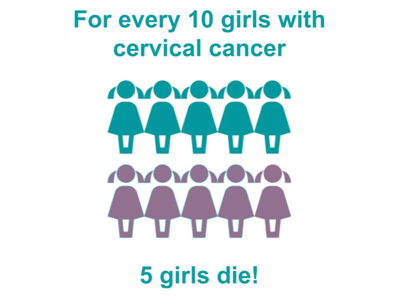
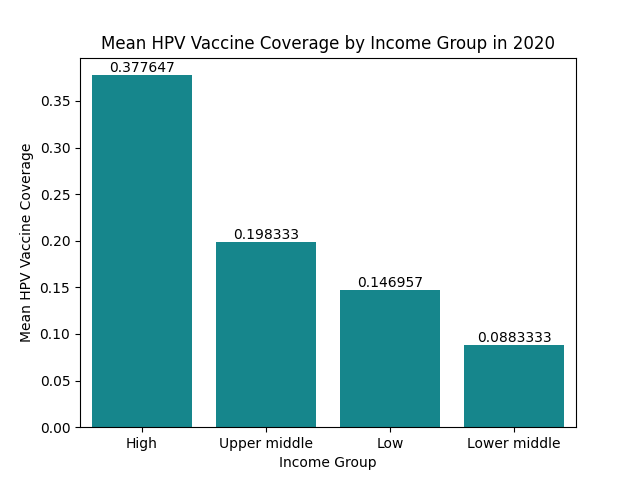

According to the Centers for Disease Control and Prevention (CDC), cancer is a disease in which cells in the body grow out of control. Cancer is always named for the part of the body where it starts, even if it spreads to other body parts later. When cancer starts in the cervix, it is called cervical cancer. The cervix connects the vagina (birth canal) to the upper part of the uterus. The uterus (or womb) is where a baby grows when during pregnancy. Anyone with a cervix is at risk for cervical cancer. It occurs most often in people over age 30. Long-lasting infection with certain types of human papillomavirus (HPV) is the main cause of cervical cancer. HPV is a common virus that is passed from one person to another during sex. Unfortunately, in 2020 alone, there were approximately 604,000 new cases and 342,000 deaths worldwide.
The World Health Organization (WHO) recommends the HPV vaccine at age 9–14 years as a highly effective way to prevent HPV infection, cervical cancer and other HPV-related cancers and screening beginning from the age of 30 (25 years in women living with HIV) to detect cervical disease, but across countries, inequalities in access to vaccination, screening and treatment services, risk factors including HIV prevalence, and social and economic determinants such as sex, gender biases and poverty keeps cervical cancer as a significant global health issue.
Data suggests that higher income countries, such as the United States and Sweden, have relatively high coverage at approximately 37%, which is almost double the coverage of the following income group, the upper middle income, which includes countries such as Argentina and South Africa, at a coverage of approximately 20%. Interestingly enough, the lower middle income group saw the worst coverage at approximately 8%, even compared to low income countries, which saw a coverage of approximately 15%. Regardless, it is evidently clear that there is a significant discrepancy in coverage across income groups.